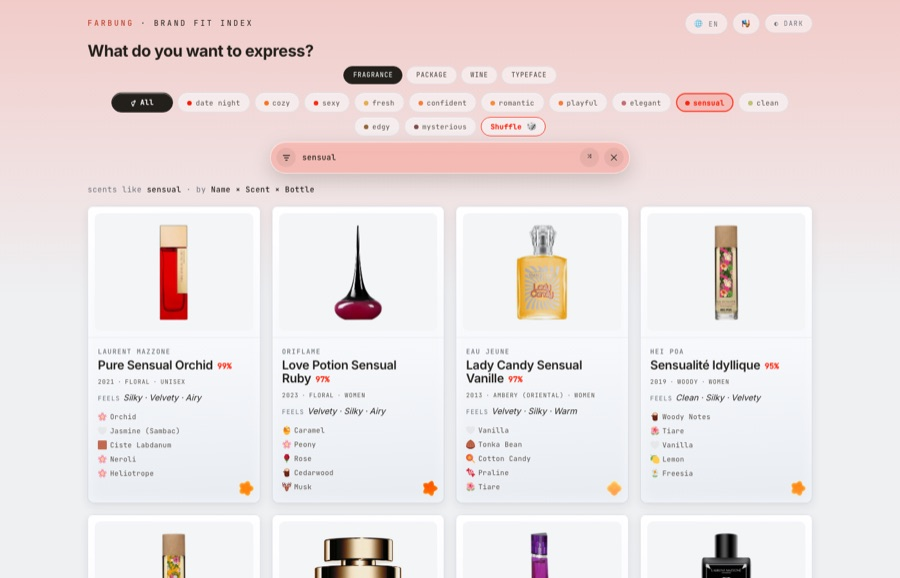
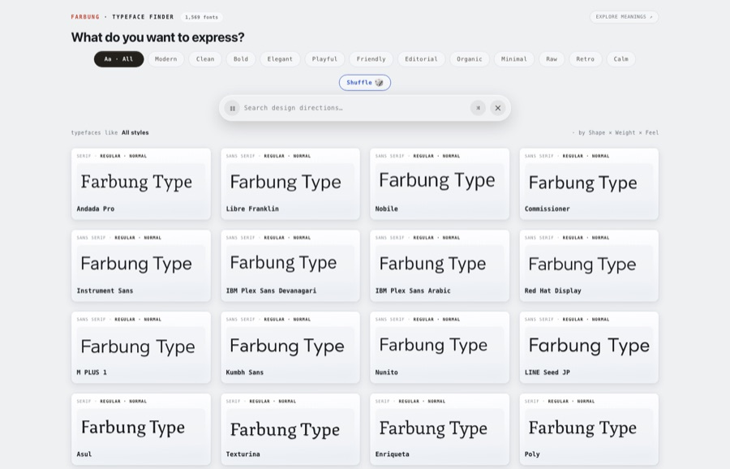
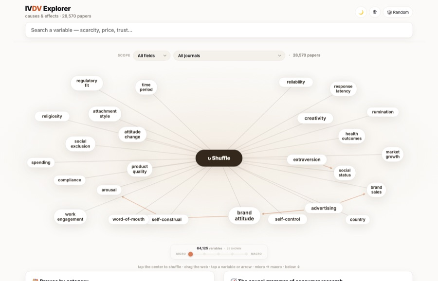
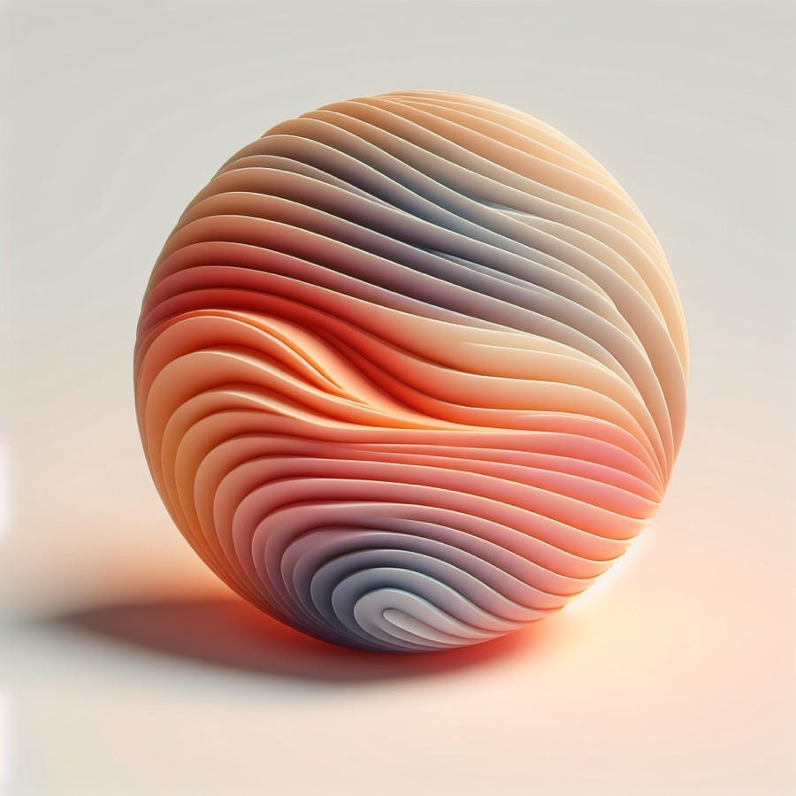
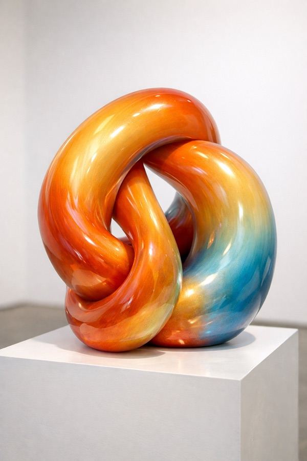
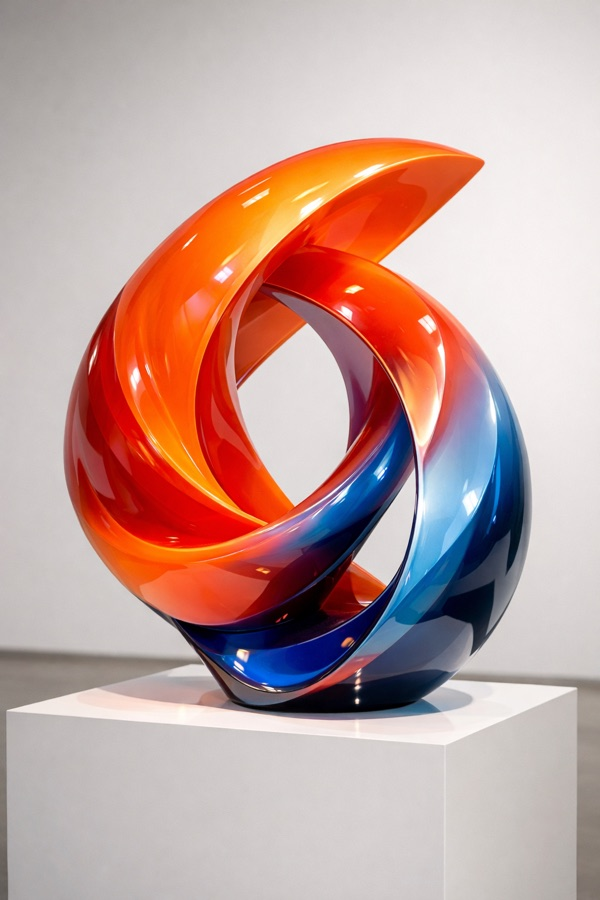

Ph.D. in Marketing · Virginia Tech
A scent suits a brand or it doesn't. A typeface feels playful before anyone can say why. I build instruments that turn these unspoken judgments into measurements — and test them against how people actually perceive.
Brand meanings are abstract, but the cues that express them — a color, a shape, a typeface, a scent — are usually chosen by intuition and evaluated only after launch. I propose sensory connotation as a shared representation that places meanings and candidate cues on common coordinates, so that fit can be measured before execution.
The instrument is validated against criteria the model cannot supply: images rendered without ever seeing the concept's name, direct convergence with human ratings, and trained sensory panels.
Cross-linguistic sensory connotation. Does the language-to-sensory mapping survive translation between English and Korean?
Spatial sensitivity. How perceived spatial layout shapes time perception and preference.
AI and creativity. When lower intrinsic motivation improves creative work with generative AI.
Lee, Y. J., & Park, J. (2022). The safety paradox of self-driving cars. Asia Marketing Journal, 23(4).
Sensory marketing and cross-modal correspondence · brand meaning · language models as measurement instruments · consumer responses to AI

Pick a meaning, then switch between fragrance, packaging, wine, and typeface to see the candidates that express it best — all on one seven-axis sensory map.
simsang-1efb9.web.app ↗
1,569 typefaces ranked against 356 meanings by shape, weight, and feel. Type serenity and watch the fonts reorder.
simsang-type.web.app ↗
The causal grammar of consumer research: 28,570 papers and 64,125 variables, organized as a web of causes and effects you can search and walk.
ivdv-cddf3.web.app ↗From the original SimSang — a perceptual dictionary that reads the sensory character of a word and renders it as an image or translates it into a fragrance.



Instructor of record, Virginia Tech
Ph.D., Marketing — Virginia Tech 2026
M.S., Marketing — Korea University 2020
B.B.A. — Korea University 2016
Before academia, marketing at Franklin Templeton Investments.